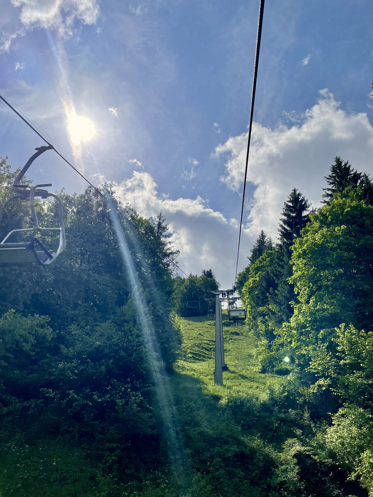
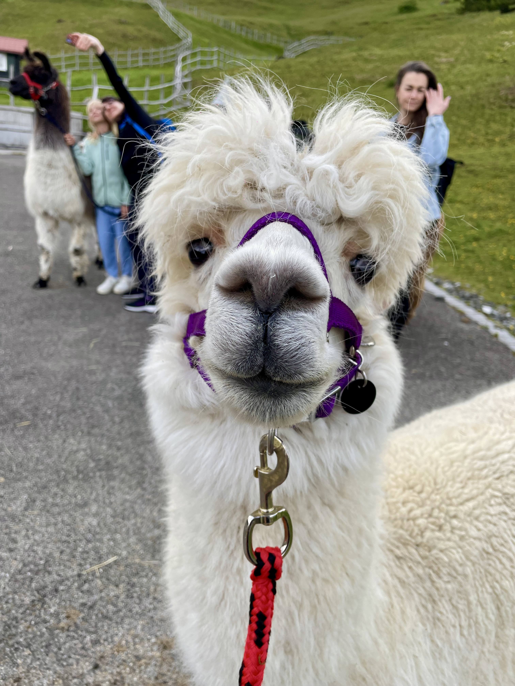
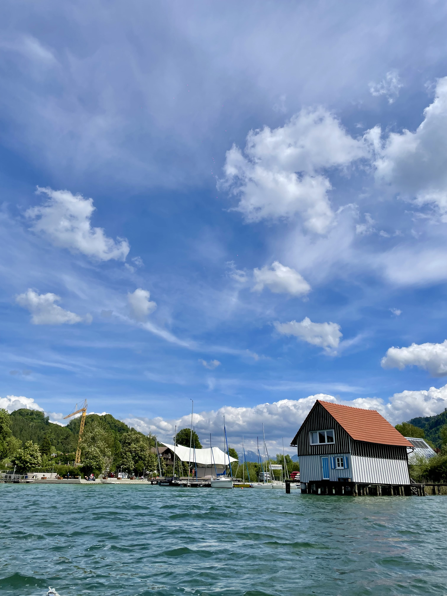
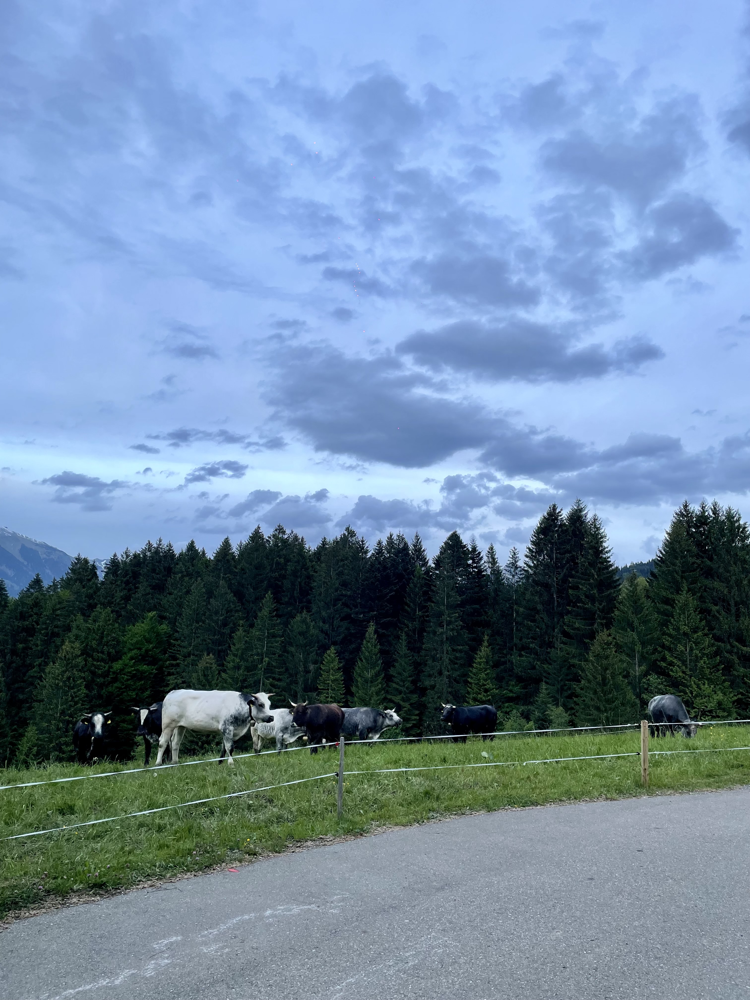
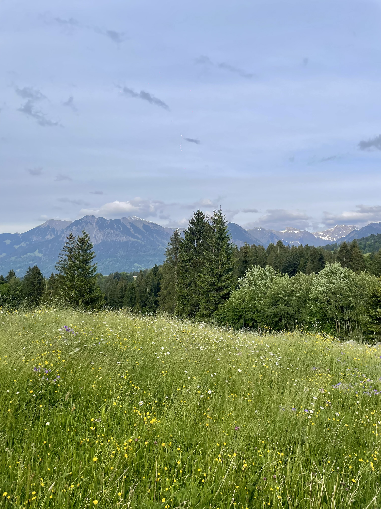

ich war im allgäu
von mara am donnerstag, 5. Juni 2025
Letztens war ich zu Besuch im Allgäu. Bisher war das Allgäu für mich immer ein Mystikum. Aus allerlei Erzählungen wusste ich, dass man als Jugendliche im Allgäu viele Drogen konsumiert. Ich habe mir vor allem üppige grüne Wiesen vorgestellt und konnte diese beiden Infos nie zusammenbringen.
Also habe ich mir das ganze mal genauer angeschaut und bin losgezuckelt. Am ersten Tag waren wir kurz in Kempten und ich entdeckte direkt einen der Bachelors am Bahnhof. Deutlich spannender wurde es dort allerdings nicht.

Am nächsten Tag hatten wir ein straffes Programm und wollten eigentlich schon um 9 Uhr einen Berg besteigen. Das hat zeitlich leider so gar nicht geklappt weil wir bis um 10 Pfannkuchen gegessen haben. Also ging es später mit dem Sessellift ganz entschleunigt zur Alpsee Bergwelt.
Dort haben schon die Alpakas und Lamas brav auf uns gewartet und wir sind so 45 Minuten mit ihnen um ihr eigenes Gehege gelatscht. Mein Alpaka hieß Milan und hat wirklich gar keinen Spaß verstanden. Am Ende waren wir aber trotzdem oder gerade deshalb ein gutes Team und ich durfte sogar streicheln. Es hat wirklich viel mehr Freude gemacht als gedacht und für die Tiere war es vermutlich auch ok!

Dann ging es mit Deutschlands längster Sommerrodelbahn wieder den Berg hinab und ich habe nicht mal Stau verursacht, weil ich ordentlich Gas gegeben habe (oder halt einfach nicht gebremst). Später sind wir noch Tretboot auf dem Alpsee gefahren und haben Eis gegessen.

Abends bretterten wir über die Serpentinen und durch eine Schlucht, über die angeblich mal ein Hirsch gesprungen ist. Wir waren fein essen auf einer Alpe (ich glaube man sagt so). Auf einer Wiese in der Nähe standen 8 Bullen auf einmal, das fand ich relativ beachtlich und hatte Angst.


Am nächsten Tag hat es geregnet und ich bin nach Hause gefahren. Das Mystikum Allgäu wurde also ein bisschen gelüftet. Es gab schon viele grüne Wiesen, aber auch genauso viele Berge. Drogen hat mir niemand angeboten, aber ich bin ja auch nicht mehr jugendlich.
Ich komme gerne nochmal wieder!